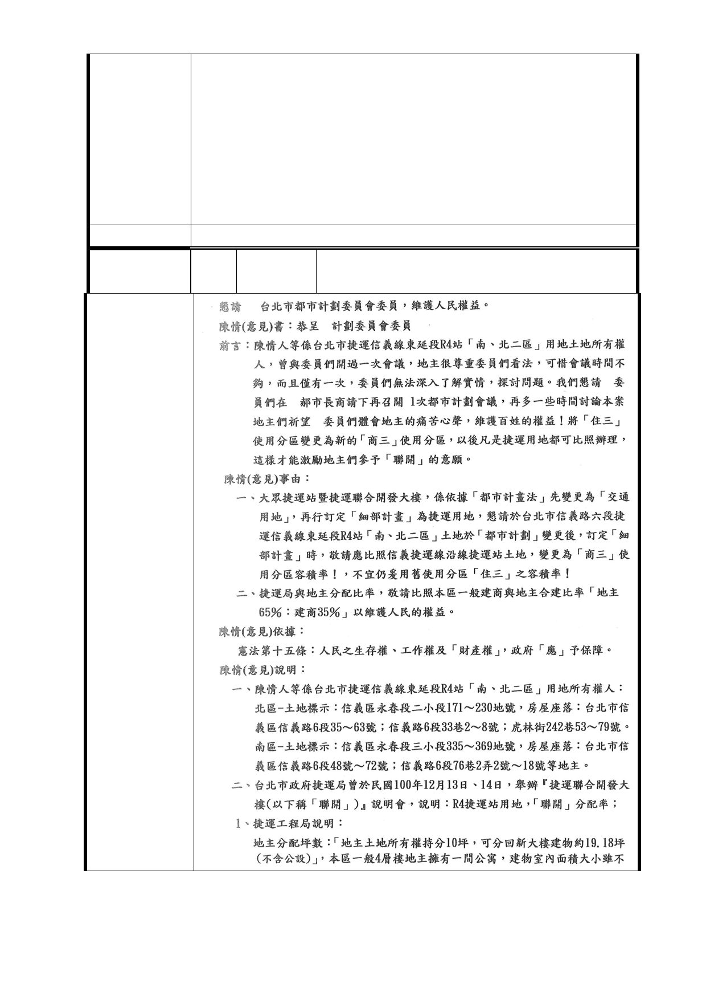

區大眾捷運系統土地開發權益分配審議委員會」審議，確
認與投資人協商底線，俟協商確定後，方得確定權益分配
比例。
3. 本府捷運局後續辦理用地之協議價購作業時，配合土地徵
收條例 101 年 1 月 4 日修正施行後，本府後續會依市價與
土地所有權人進行協議。
4. 同編號 3 研析意見，土地開發區(捷)基地容積獎容積獎勵
原則仍應依都市計畫委員會審議決議辦理。
委 員 會 決 議 同「市府回應意見」。
編
號 14-2
陳情人
崔福岑等 5 人、石師誠等 5 人（R04 捷一、
捷二）
陳情理由
- 93 -